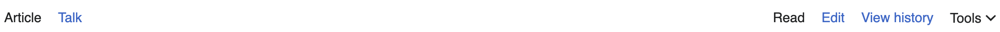
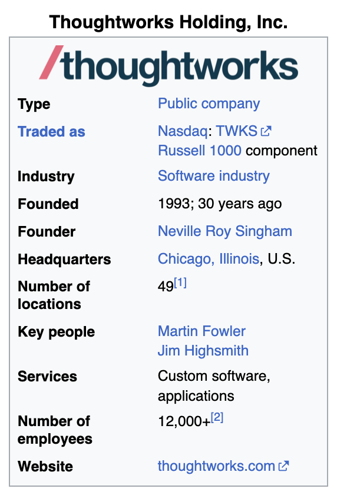

Thoughtworks


Thoughtworks is a publicly owned, global technology company with 49 offices in 18 countries.[3] It provides software design and delivery, and tools and consulting services. The company is closely associated with the movement for agile software development, and has contributed to open source products. Thoughtworks' business includes Digital Product Development Services,[4] Digital Experience[5] and Distributed Agile software development.[6]